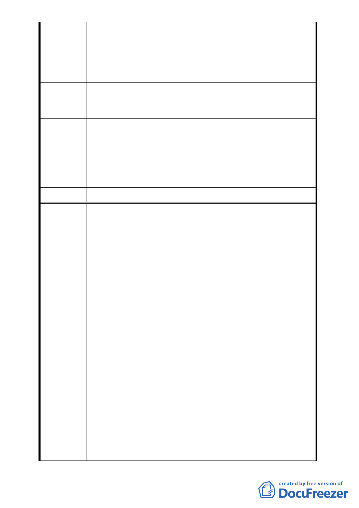

符法定門檻要求。
六、為此，特請 貴會暨 2010 臺北好好看開發案相關主管機
關，勿再續行本案之審查程序，並逕行撤銷本案，以免
拖延日久衍生更多糾擾紛爭，以維民眾權益與福祉。
因所有權人同意比例已明顯不符法規要求，懇請停止審查程
建 議 辦 法 序並予以撤案，以維人民權益。
依市府都市發展局代表說明：「台北好好看申請案並未突破都
市更新法令之限制，都市更新條例中所規範實施者應具備之
專 案 小 組 條件與同意比例，也不會因申請台北好好看而賦予某一公司
審 查 意 見 特別之權利」，本案陳情民眾所關切之更新同意書效力、權利
變換程序及未來實施者之適任與否等議題，因非涉都市計畫
之變更和審議，請陳情民眾另循都市更新程序辦理。
委員會決議 同專案小組審查意見。
何繡端、葉乙元、湯正昌、王寧穎、吳鼎
編
號5
陳情人
生、蔡秀偵、林振宏、魏政助、魏政勇、
鄭至慧、謝玉真、王元海、林嘉琪、藍正
浩、張林希旋
一、說明人等係前揭變更都市細部計畫範圍內之不動產所有
權人，即土地權利關係人，說明人等對於旨揭都市更新
案之原申請單位即合康工程顧問股份有限公司並無任何
信心，亦無意願參與以該公司擔任實施者之前揭都市更
新案，合先陳明。
二、說明人等之具體意見如下：請維持說明人等所有之土地
之使用分區管制仍為「第三種住宅區」，反對變更為「第
三種住宅區（特）」。
三、謹按，現行該等土地之使用分區管制為「第三種住宅區」，
陳情理由
係為社會公眾所得查明、接受，並明暸其間各種風險〔例
如若欲拆除重建，則其建築基地之最小面寬為8米，最低
深度為16米，以及目前對於畸零地、建蔽率、容積率等
種種規定等〕；惟都市計畫細部計畫中之土地之使用分
區管制若變更為「第三種住宅區（特）」後，則勢必變
成本筆土地僅能依照前揭合康工程顧問股份有限公司之
藍圖而為整體開發使用，而不能回復原來「第三種住宅
區」之現狀。
四、鑑於任何計畫在定案之前皆有變數、任何開發在完成之
前都有風險，未來的一切既然難以預測，是以說明人堅
- 29 -